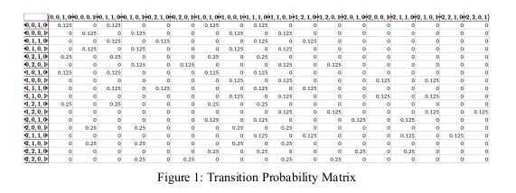
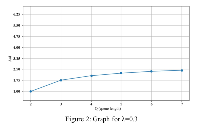

bilgi yaşı (age of information - aoi), zaman duyarlılığının ön planda olduğu nesnelerin interneti (iot)
uygulamalarında veri tazeliğini ölçen kritik bir performans metriğidir. bu çalışmada, iot ağlarında aoi
optimizasyonu markov tabanlı analitik modelleme ile incelenmiştir. sensör düğümlerinin veri üretim ve
iletim süreçlerindeki kuyruklama dinamiklerini (fifo ve ber/g/1/q modelleri) karakterize etmek amacıyla ayrık
zamanlı bir markov zinciri modeli geliştirilmiştir. düğüm sayısı, kuyruk uzunluğu ve paket geliş hızı gibi
ağ parametrelerinin aoi ve paket kayıp olasılığı (p_drops) üzerindeki etkileri hem teorik olarak hesaplanmış hem de
simüle edilmiştir. elde edilen bulgular, kuyruk kapasitesinin artırılmasının paket kayıplarını azalttığını,
ancak paketlerin kuyrukta bekleme süresini uzatarak bilgi yaşını artırdığını matematiksel olarak
ispatlamıştır.
temel kazanımlar
matematiksel modelleme ile stokastik süreçler (bernoulli ve poisson dağılımları) ve ayrık zamanlı
markov zincirleri kullanılarak karmaşık iot ağ dinamiklerinin kuramsal olarak modellenmesi.
kuyruk teorisi denklemleri kullanılarak ber/g/1/q kuyruk yapısı ve fifo (first-in first-out) mantığı
ile çalışan sistemlerde darboğaz ve gecikme analizlerinin yapılması.
sistemdeki sensörlerin kuyruk durumları ve baz istasyonunun iletim
kararlarını içeren çok boyutlu sistem durumlarının (state space) algoritmik olarak matrislere dökülmesi.
bilgi yaşı ile ağ güvenilirliği (paket kayıp oranı) arasındaki
ters orantının analitik olarak dengelenmesi.
kullanılan araçlar ve kütüphaneler
matlab: simülasyon ortamının uçtan uca tasarlanması ve algoritmaların kodlanması.
python: matlab ile oluşturulan ortamın makalede yer alacak şekilde derlenmesi (kullanılan kütüphaneler aşağıdadır).
numpy: durum geçiş olasılık matrislerinin (transition probability matrix) oluşturulması, lineer
cebir operasyonları ve özvektör (eigenvector) hesaplamaları ile kararlı durum (steady-state) analizlerinin
yapılması.
pandas: büyük boyutlu durum matrislerinin yapılandırılması ve raporlanmak üzere dışa
aktarılması.
matplotlib: simülasyon çıktılarının, kuyruk uzunluğu (q) ve bilgi yaşı (aoi) ilişkisini
gösterecek şekilde kuramsal grafiklere dönüştürülmesi.
itertools: sistemin alabileceği tüm olası durum kombinasyonlarının iteratif olarak
üretilmesi.

[ belirlenen senaryoda paket aktarımı için durum geçiş olasılık matrisleri.
]

[ λ=0,3 durumunda bilgi yaşı ve kuyruk uzunluğu grafiği.
]
[ λ=0,7 durumunda bilgi yaşı ve kuyruk uzunluğu grafiği.
]